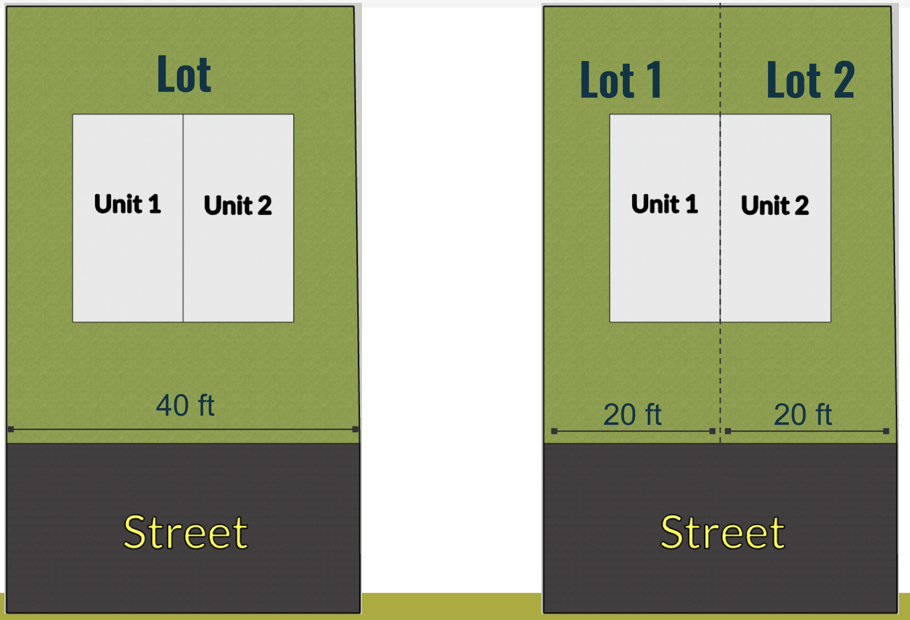

Asheville City Council - August 25th Meeting
August 31, 2026
At Asheville’s City Council meeting of Tuesday, August 25, 2026, the council unanimously approved three amendments to our zoning code:
- Duplexes in all residential zones
- Larger ADUs
- Elimination of parking minimums
These small, but meaningful changes have been a long time coming, and we’re celebrating that they finally got over the goal line. You can read our letter of support prior to the vote here.
All three amendments will make it easier to build the infill housing we desperately need, but let’s dig into some details.
Duplexes Allowed Throughout All Residential Neighborhoods
Outcome: Approved
Votes:
In favor: Esther E. Manheimer, S. Antanette Mosley, Kim Roney, Maggie Ullman, Sheneika Smith, Bo Hess, Sage Turner
The first reform is a de facto abolition of single-family zoning.
This is an important first step toward undoing the destructive and exclusionary history of using zoning as a facade to keep out anyone who can’t afford the price of admission.
As noted during the meeting, about half of all of Asheville’s residential land was zoned single-family-only, so this effectively doubles the maximum density of half of the city’s zoned land area (from 51% to 92%). Also included in this amendment is an allowance for “townhoming” a duplex. In other words, a duplex can be split into two lots, allowing new opportunities for homeownership that working people can afford.

Larger ADUs
Outcome: Approved
Votes:
In favor: Esther E. Manheimer, S. Antanette Mosley, Kim Roney, Maggie Ullman, Sheneika Smith, Bo Hess, Sage Turner
Current rules allow ADUs that are “70% of the primary structure’s gross floor area or 800 square feet (whichever is less)”. The new rule is simpler, and allows for larger ADUs on average: it just has to be smaller than the main structure, with a maximum of 1,000 square feet. The new rules also allow for an ADU on a lot with a duplex (effectively increasing all residential zones to allow for at least three units!).
There are two wrinkles with these ADU updates.
First, the height restrictions have also been changed to a flat twenty-five feet. Previously, dwellings were capped at this height, but each additional foot of setback allowed for an additional foot of height (all the way to the city-wide residential forty foot maximum). In theory, this decreases flexibility, especially on lots with odd or limited buildable terrain. This particular point caused a bit of a heated exchange on the dais between council members. Ultimately, it was decided to adopt the recommended amendment as-is, but we would like to see this new restriction revisited sooner rather than later.
Second, the original recommendation from Asheville’s Planning and Zoning Commission was a 1,200 sq ft maximum, but a recent state bill superseded this to set a maximum of 1,000 sq ft. In light of this, we’d like to see height restrictions loosened to allow for more flexibility within the 1,000 sq ft maximum.
Parking Mandates
Outcome: Approved
Votes:
In favor: Esther E. Manheimer, S. Antanette Mosley, Kim Roney, Maggie Ullman, Sheneika Smith, Bo Hess, Sage Turner
Speaking of state preemption, the third amendment passed by council was an abolition of parking minimums.
Another recently enacted state bill made it illegal for any municipality to establish parking minimums (starting Jan 2027), so this amendment is simply a formality to bring city code in line.
Regardless, it’s a positive development. During the presentation to council, Interim Planning Director Chris Collins made the point that parking minimums don’t drastically reduce the amount of marking most developments will provide. While that may be true for larger projects, infill housing like duplexes and ADUs may benefit the most from being free from parking minimums.
What’s Next
Sometimes the funniest feeling for advocates of a cause is when you are simultaneously appreciative of a “win,” and also eager to see more progress made. We thank Asheville city staff, City Council, and the Planning and Zoning Commission for their work on these reforms. Celebration is in order.
Yet allowing duplexes and larger ADUs and actually building them are two very different things. The former is a precondition, but the latter will require developing a network of builders, financial instruments, and incentives to make it a reality.
We’d also love to go further: triplexes and quadplexes in more residential zones, removing or reducing minimum lot sizes, and more.
During the public comment period, just before all three of these amendments were passed, sixteen Asheville residents took the time to express their enthusiasm. Not one speaker spoke against these pro-housing measures. In addition to that of Asheville For All, councilors heard support from MountainTrue, Sunrise Movement WNC, Strong Towns Asheville, WNCSierra Club, and residents coming from everywhere from West Asheville to Haw Creek.
Thanks to everyone who showed up and otherwise advocated for increasing housing options. We believe that this presence sent a strong signal, not only that the three zoning text amendments were needed and overdue, but also that Ashevilleans want the city to do even more.
Additional Media Coverage
- Blue Ridge Public Radio: “Asheville Council cancels Flock cameras, loosens zoning rules for smaller homes”
- Citizen Times: “Duplexes, bigger backyard homes now allowed under Asheville zoning changes”
Explore More Council Votes
Use our Asheville City Council Vote Tracker to find out how councilors have voted on housing-related items.